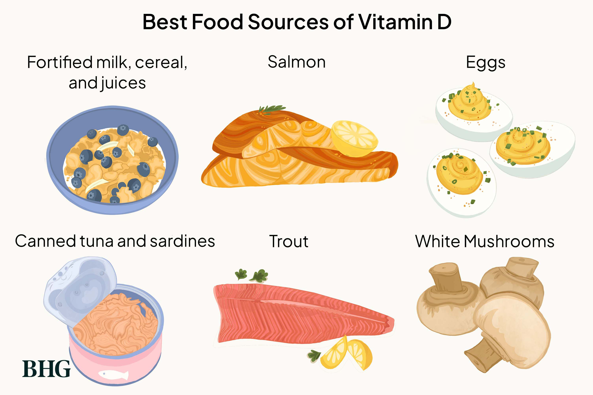
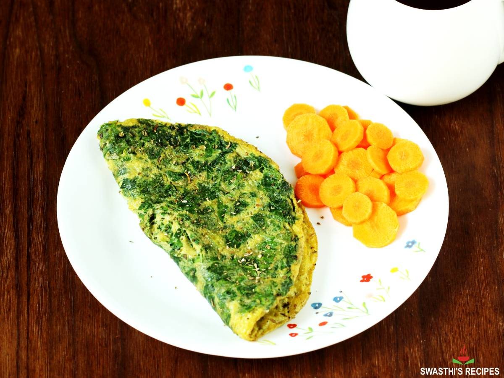

VITAMIN D
INTRODUCTION
Vitamin D is a fat-soluble vitamin that is important for strong bones, muscles, and general good health. There are two main forms of vitamin D, which are D2, otherwise known as ergocalciferol, and D3, which is also known as cholecalciferol.
FUNCTIONS
Several organ systems benefit from the presence of vitamin D in the body. The primary role of vitamin D is to support the absorption of calcium from dietary sources into the bloodstream and prevent calcium reabsorption in the kidneys. This helps to direct calcium towards osteoclasts and osteoblasts to strengthen the bones, as well as to lessen the risk of hypocalcemic tetany associated with high calcium intake.
SOURCES
- Oily fish such as salmon, sardines, herring, and mackerel
- Red meat
- Liver (avoid liver if you are pregnant)
- Egg yolks
- Fortified foods such as some fat spreads and breakfast cereals
- Other dairy products, such as yogurt

DEFICIENCY
- In children, it can cause rickets. Rickets is a rare disease that causes the bones to become soft and bend. African American infants and children are at higher risk of getting rickets.
- In adults, severe vitamin D deficiency leads to osteomalacia. Osteomalacia causes weak bones, bone pain, and muscle weakness.
RECIPE – SPINACH OMELETTE
Ingredients
- 1 cup spinach, finely chopped
- ½ cup coriander leaves
- 1 green chili, chopped (optional)
- ½ teaspoon ginger (optional)
Procedure
- When making an omelette, it is optimal to prepare any fillings before you begin to cook your eggs. So clean and chop first. Pluck spinach and coriander leaves. Rinse them in a large pot of water. Drain them completely. Chop them along with chilies if using. Grate or mince ginger.
- Add them to a bowl. You can also break the eggs into the bowl first, then add the other ingredients.
- Add ½ teaspoon salt, ½ teaspoon turmeric, and ½ teaspoon ginger. If you do not like ginger, just skip it.
- Mix them up.
- Break 2 to 3 eggs.
- Beat until frothy.
- Heat a pan with 1 half to tablespoon oil, ghee, or butter.
- Pour the egg mixture. Spread the spinach all over.
- Cook on medium heat. When the base is set, turn it.
- Cook it until completely done on both sides.
- Sprinkle oregano and pepper if you like. You can also add some grated cheese if you like.
